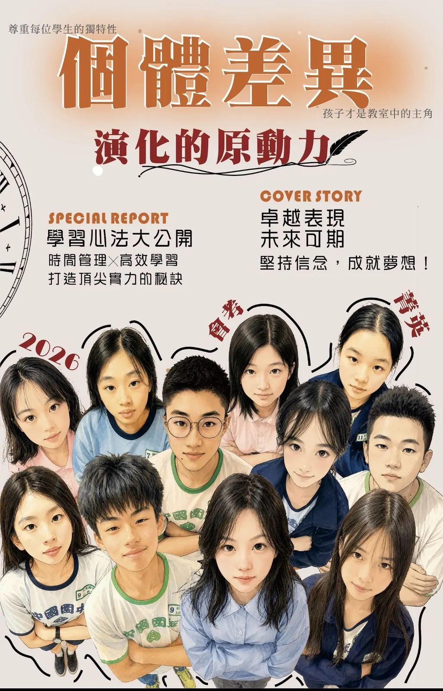

專業小班
小班教學，掌握學生狀況，及時給予引導與支持。
ABOUT SHENGDA
尊重每位學生的獨特性，讓孩子在理解、練習與陪伴中，走出屬於自己的學習節奏。
昇達3號數學文理短期補習班專注於國小高年級至國中階段的數學與自然科學教學。我們相信，學習不該只是課本與考試的堆疊，而是能與生活連結、真正被理解與內化的過程。
順應 108 新課綱精神，我們將抽象的學科內容轉化為貼近生活的學習經驗，讓孩子在理解中學習，在應用中成長。
國中階段是孩子學習歷程中最關鍵的啟程期。課業難度明顯提升，心理與學習節奏的轉換也充滿挑戰；我們不只重視成績，更重視孩子建立正確的學習方法、自信心與穩定步調。
透過小班制教學與個別關注，老師能即時掌握每位學生的學習狀況，給予適切的引導與支持，陪孩子在會考準備的路上走得更穩、更踏實。
和我們聊聊 →
OUR TEACHING
課程規劃完整銜接國小、國一到國三的學習脈絡，從基礎紮根、觀念銜接、抽象思考到整合應用，循序培養學生的邏輯能力與理解深度。
自然課結合實驗活動與探究式學習，讓孩子在「動手做」的過程中理解原理，真正做到學中玩、玩中學。
我們相信，每個孩子都有適合自己的學習節奏。透過定期檢核、輔導加強與系統化複習，協助學生找出盲點、建立信心；讓學習不再只是壓力，而是一條能看見成長與成就感的道路。
認識國中課程 →小班教學，掌握學生狀況，及時給予引導與支持。
專業的全職教師，一手教學、輔導與陪伴，讓孩子的學習沒有斷層。
透過檢核與整理，建立穩定的學習步調。